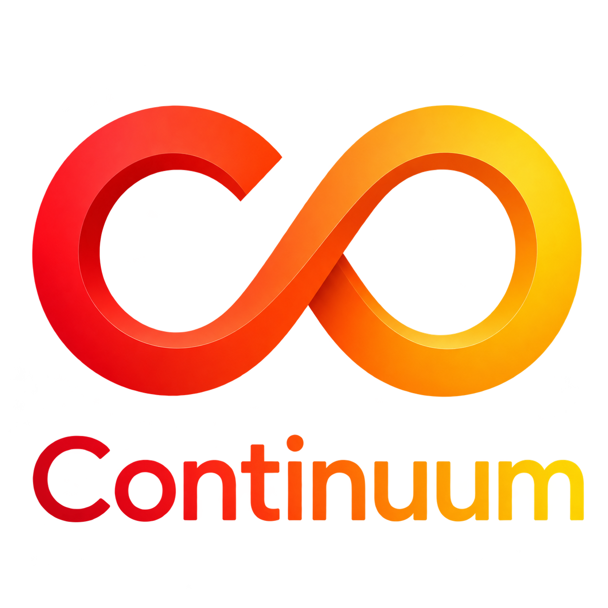

Continuum Pilot
Operations, Connected. Knowledge, Continued.
폐쇄·이질적인 Enterprise IT 환경을 이해하고, 현장의 운영 경험을 조직의 Intelligence로 전환하는 Continuum의 Client와 Hub 화면을 살펴보세요.
Continuum Client
고객 환경 안에서 운영 정보, 솔루션, Incident와 Lifecycle을 확인하는 현장 운영 화면입니다.
Client Pilot 열기 Enterprise IntelligenceContinuum Hub
여러 고객과 환경, 솔루션 및 운영 지식을 연결하고 관리하는 중앙 Hub 화면입니다.
Hub Pilot 열기